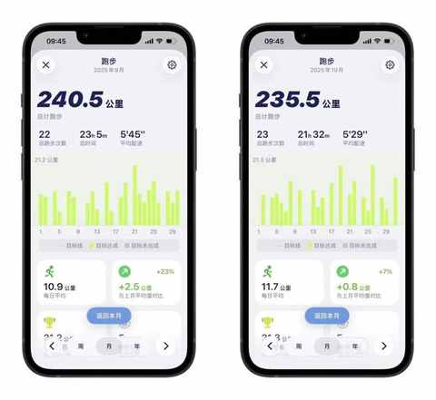
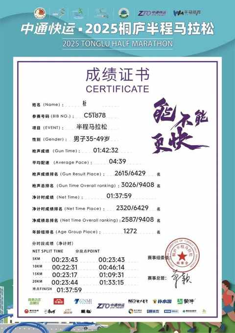
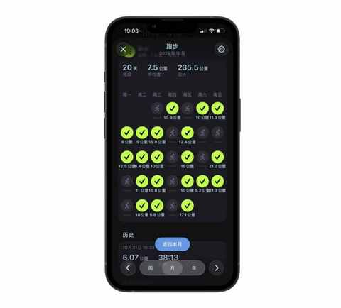
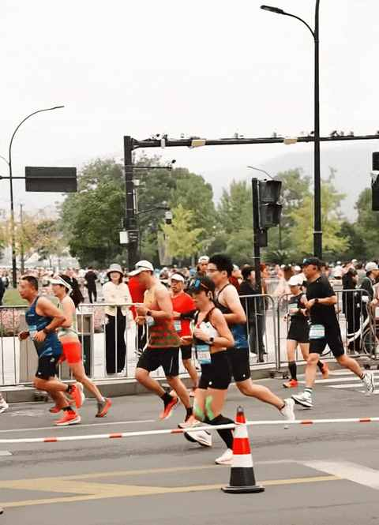
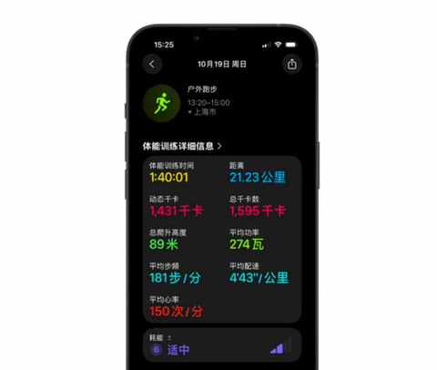
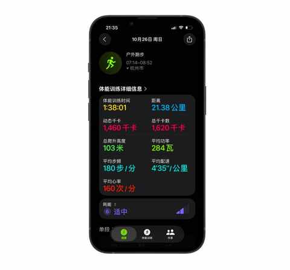
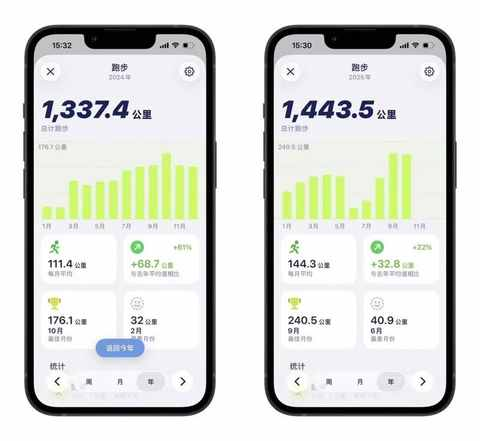

连续两个月跑量超200km：我的3个意外收获！
一、中签后决定堆跑量
今年比较幸运，开始尝试报名马拉松的第二年便中签三场比赛，分别是桐庐的半马、合肥的半马、福州的全马。
在 9 月初收到中签成功的短信之后，当即决定从 9 月开始月跑量增加到 200km 以上，最终 9 月和 10 月的跑量都在 230km 以上。

跑量没有白堆的，上周日是桐庐半马，虽然在 C 区出发，突围的过程很痛苦，但在赛道的加持下也顺利PB。
本次比赛也是个人的第一场 A类赛事， 首次在比赛中跑进了 140。

通过提高跑量从而跑到了相应的成绩是意料之中的事情，因为在跑的过程中能感受到呼吸的平稳和步伐的均匀，我更想细说的是下面这 3 个意外收获。
二、这 3 个意外收获
1️⃣ 找到了合适的跑休节奏
每个人的跑休节奏是不一样的，要找到属于自己的跑休节奏并不容易。
有相当长一段时间里面，我的跑休节奏是跑一休一，当时有一个很大的感受是良好的状态很难延续，然而状态不太好的时候休一天之后再跑也没有怎么缓解。
从今年 6 月份开始尝试跑二休一，然后一步步到 9 月底堆跑量的最后一周试了试跑六休一。

坚持下来了，发现并没有那么累，只需注意配速和单次的时间，这样每次的强度便在可控范围里面。

从 10 月份开始便开始主要以跑五休二的节奏来安排每周的跑步，一周 7 天有 5 天会安排跑步，休息的两天练力量和做其他有氧。
2️⃣ 对选跑鞋的认知更清晰了
① 选 跑鞋的第一要义是稳定性
在这篇文章里面做了详细的讲述，也是通过这双“问题”跑鞋发现稳定性的重要。
一双 “问题” 跑鞋带来的顿悟：问题的答案藏在细节里……
用一句话总结就是： 失去稳定性，失去一切！
排除掉品控或鞋子损坏的因素，一双跑鞋的稳定性和每个人的跑姿、落地方式、常跑的场地条件等都有相关度。
② 我暂时不太适合厚底跑鞋
在看桐庐半马比赛的视频中，发现有一位摄影师的视频拍到了我的跑姿和跑法：偏后掌落地，抬腿高度偏低。

（靠近中心位置，戴白色全顶帽和黑色短裤的是我）
由此也能联想到自己为啥跑的时候会偶尔托底，特别是鞋底偏厚的时候，我暂时可能不适合厚底跑鞋，因为髋部力量不足导致抬腿高度有限。
3️⃣ 比赛前不宜训练 过度
由于上次跑半马比赛都接近一年了，想 PB 但心里又没底，在桐庐半马前的一周，让老婆骑自行车在前面充当兔子，我在后面尽力跑。
当天温度尚可，但风特别大，平均心率 150，顺利跑进140。

天气好+状态不错！从 5km 到 10km 再到半马都 PB 了！
可没想到的是后面三五天双腿的疲惫感，缓解的特别慢，直到比赛前一天慢跑 5km 的时候都觉得挺累。
明天桐庐半马，赛前来个 5km慢跑
好在上午跑完后及时做了拉伸，到晚上的时候感觉没有那么累，第二天一大早五点多起来也感觉状态良好，在酒店准备好便步行去了比赛起点。

比赛确实很不一样， 平均心率直接来到了 160。在赛道的前 10km 依然是战战兢兢的，生怕出现抽筋突然掉速之类的情况。
从桐庐比赛回来后，才真正理解了赛前是真的不宜训练过度！
三、结语
借助 Grow 中的统计，我发现今年 10 个月的跑量已经比去年整年的跑量多了超 100km，今年的总跑量可能会无限接近 2000km。

在 11 月和 12 月，有一场半马和一场全马，我会认真吸取上次备赛的经验和教训。带着最近堆跑量的这些意外收获，我对接下来的合肥和福州的比赛，满怀期待。
说不追求成绩有点太假了，相比 成绩，我更期待的，是能长久而健康地跑下去。